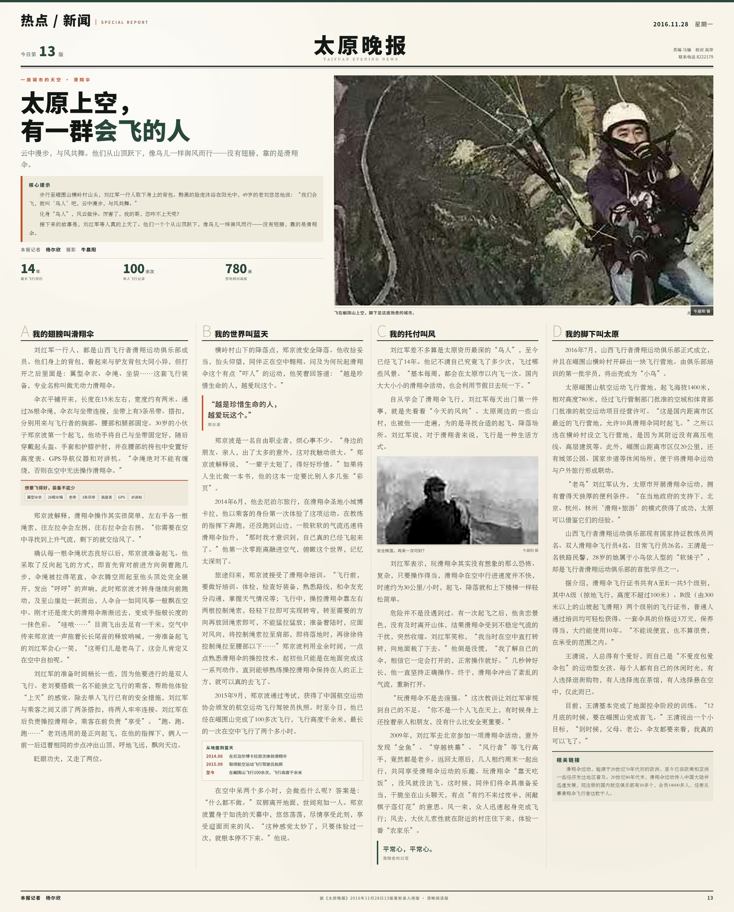

这不是一篇新写的文章。它来自2016年11月28日《太原晚报》第13版，一篇关于太原滑翔伞的采访。近十年后再读，风、山脊和起飞前的安静，仍然停在纸面上。
那一年7月，山西飞行者滑翔运动俱乐部正式成立，在崛围山横岭村开辟出一块飞行营地。报道里的刘红军已经飞了14年；30岁的郑京波——也就是大家口中的“波教”——刚在2015年拿到飞行驾驶员执照，已经在崛围山飞了100多次；还有28岁的王清，刚完成地面控伞训练，正等着自己的第一次首飞。
他们把背包打开，里面是翼型伞衣、26根伞绳和坐带；把伞衣铺在山坡上，等一阵合适的风。然后，从山顶跃下，像鸟儿一样御风而行——没有翅膀，靠的是滑翔伞。
“我们会飞，就叫‘鸟人’吧，
云中漫步，与风共舞。”刘红军 · 49岁 · 原载《太原晚报》2016.11.28
云中漫步，与风共舞。”刘红军 · 49岁 · 原载《太原晚报》2016.11.28
原报道用四个小节记录了这项运动在太原的样子：A「我的翅膀叫滑翔伞」，B「我的世界叫蓝天」，C「我的托付叫风」，D「我的脚下叫太原」。从装备、起飞、气流，到飞行执照与营地，那些今天看来已经熟悉的细节，在近十年前还是一群人的日常练习。

点击查看 3200 × 3980 高清版 ↗原文摘录 / EXCERPT
“越是珍惜生命的人，越爱玩这个。”郑京波
“你不是一个人飞在天上，有时候身上还拴着亲人和朋友，没有什么比安全更重要。”刘红军
报道的结尾，王清说，等12月底完成首飞，父母、老公、伞友都要来看——“我真的可以飞了。”这句话像是对一次起飞的期待，也像是对一项运动在太原扎根的注脚。
← 返回滑翔伞 · 飞行影像原载 2016.11.28 · 重排 2026.11